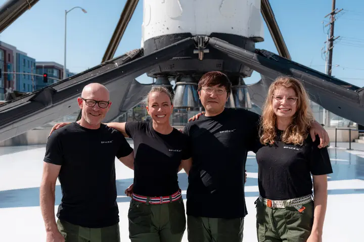

Tidlig tirsdag morgen ble Jannicke Mikkelsen (38) historisk da hun som første norske astronaut reiste ut i verdensrommet.
Skrevet av: Ine Schwebs og Kari Aarstad Aase
Oppsumering
1. Historisk Romferd Jannicke Mikkelsen har blitt den første nordmannen i verdensrommet etter oppskytning fra Kennedy Space Center i Florida.
2. Unik Bane Hun reiser i en Crew Dragon-kapsel på en sjelden pol-til-pol-bane, en innovativ rute for romferder.
3. Vitenskapelig Oppdrag Mikkelsen deltar i medisinske eksperimenter om mikrogravitasjonens effekt på menneskekroppen.
4. Norsk Stoltet Hun uttrykker glede over å representere Norge i dette historiske øyeblikket.
Hun ble skutt opp fra Kennedy Space Center i Florida sammen med tre andre astronauter. En av dem er den kinesiskfødte kryptoinvestoren Chun Wang, melder Reuters.
De som så oppskytningen, kunne se flere glimt av de fastspente astronautene i romfartøyet. Da de nådde høyde på rundt 200 kilometer, lå hastigheten på 15.000 kilometer i timen.
Foto: SpaceX/Fram2
Mannskapene ga bekreftende tilbakemeldinger til bakkepersonellet.
Ti minutter etter oppskytningen skilte Dragon-fartøyet lag med den andre bæreraketten og var i bane.
Foto: Joe Skipper / Reuters / NTB
Romkapselen Crew Dragon skal nå gå i bane rundt jorden fra pol til pol – en bane ingen mennesker har reist i før.
Tester kroppen
Mannskapet skal tilbringe tre til fem dager i verdensrommet, der de skal gjennomføre 22 forskningseksperimenter. Disse handler i stor grad om hvordan romferd og mikrogravitasjon påvirker menneskekroppen.
Et britisk oppstartsselskap kalt Hormona har sendt med urinteststrips til de kvinnelige besetningsmedlemmene Mikkelsen og Rogge om bord på romfartøyet Fram2, melder CNN.
Foto: Stig Karlsen
Målet med prosjektet er å tette «kjønnsdatagapet som eksisterer innen medisin», forteller Jasmine Tagesson, driftssjef og medgrunnlegger av Hormona.
Kun rundt 15 prosent av de over 700 personene som har reist til verdensrommet har vært kvinner. Dette har begrenset mengden forskning som er samlet om kvinners opplevelser i rommet.
Dette er SpaceX' sjette private astronautferd, og den 16. bemannede ferden totalt med Crew Dragon-kapselen. Ifølge Reuters koster hver sitteplass om bord rundt 55 millioner dollar, og det skal være Wang som finansierer turen.
Jannicke Mikkelsen sammen med resten av teamet: Ferden finansieres og ledes av Chun Wang, en kinesisk krypto-entreprenør med base på Malta (t.h.). Pilot er Eric Phillips fra Australia (t.v.). Ved siden av Mikkelsen er astronaut Rabea Rogge fra Tyskland. Foto: SpaceX/Fram2
– Jeg kjenner på ærefrykt og ydmykhet. Det er med stor stolthet jeg forbereder meg på å bli den første til å representere Norge i verdensrommet, med det norske flagget på romdrakta, har Mikkelsen sagt om oppdraget.
Inspirert av Nansen og Amundsen
Romferden har fått navnet Fram 2 - en hyllest til polarskipet som tok Nansen og Amundsen til jordklodens to poler.
Romfarten blir nemlig den første bemannede romferden over Nord- og Sydpolen.
Mikkelsen er filmfotograf, men har alltid drømt om å reise til verdensrommet. I verdensrommet har hun planer om å gjøre historiske filmopptak av nordlys.
Fram 2 blir verdens tredje kommersielle romferd med astronauter uten tradisjonell bakgrunn. Men Mikkelsen mener at hennes bakgrunn som filmfotograf er viktig.
Ferden utforsker en ny bane rundt jorden - den siste uoppdagede rundt vår planet.
– Da trenger man en filmfotograf, sa Mikkelsen til VG tidligere denne uken.
Mikkelsen er egentlig filmfotograf. I 2017 vant hun IMAGO International Award for Extraordinary Technical Achievement. Foto: Privat / Privat
Hele ekspedisjonen skal vare i tre til fem dager. Forberedelsene har vært omfattende, med 14 måneders intens trening. Mikkelsen har rollen som fartøysjef, noe som vil si at hun har ansvaret for mannskapets sikkerhet.
Det gjør henne også til den første kvinnelige fartøysjefen i verdensrommet.
I Musks rakett fra måne-rampe
Det er Elon Musks SpaceX som fasiliterer oppskytningen. SpaceX-raketten skytes opp fra den samme oppskytningsrampen som ble brukt til den historiske måneferden i 1969.
Foto: SpaceX / SpaceX